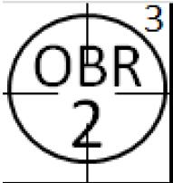
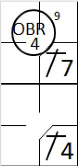
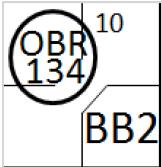
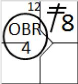
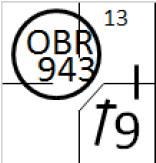
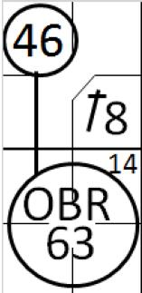

Retrait automatique prévu par le règlement (‘OBR’)
.
Il existe toute une série de retraits, considérés comme des retraits automatiques, listé dans les règles du baseball [OBR 9.09 (b) (c)]. Ce chapitre va parcourir toutes ces règles, en les illustrant par des exemples si nécessaire. On utilise la notation ‘OBR’ pour tous ces retraits. Il y en a quatorze au total.
Afin de clarifier l’action qui à mener à ces retraits automatiques, le numéro de l’action doit être notée à l’extérieur du cercle de retrait en haut et sur le côté droit.
SI le scoreur à un doute sur une action qui a entrainé un retrait, le scoreur doit demander à l’arbitre la cause de ce retrait à la fin du match (ou de la manche si possible).
NOTE : Certaines actions sur le terrain peuvent ne pas être couvertes exactement par ces quatorze règles. Dans ce cas, on doit noter l’action avec la règle dont la définition est la plus proche de l’action, et une description de l’action doit est faite dans la zone ‘Note’ de la feuille de scorage (deuxième feuille de la feuille de scorage).
Pour mémoire, l’arbitre déclare une frappe illégale quand :
-
Il utilise ou tente d’utiliser une batte qui, selon l’arbitre, a été modifiée de quelque façon que ce soit pour améliorer la distance de frappe ou causer des réactions inhabituelles sur la balle
[OBR 6.03(a)(4)].
Un batteur sera considéré comme ayant utilisé ou ayant tenté d’utiliser un bâton modifié s’il en amène un dans le rectangle du batteur
[OBR 6.03(a)(4) Commentaire].
Dans le cas d’un ‘OBR’ 1, le retrait sera crédité au receveur, ce qui explique le ‘2’ noté dans le cercle indiquant le retrait.
-
 Batteur retiré pour avoir effectué un amorti dans la zone des fausses balles pour son troisième ‘strike’ [OBR 5.09(a) (4),
OBR 9.09(b) (3)]. Dans ce cas, on doit noter ‘OBR KS’ et, en accord avec les règles du
baseball, un ‘strike out’ doit être crédité au lanceur. Le retrait doit être porté au crédit du receveur.
Batteur retiré pour avoir effectué un amorti dans la zone des fausses balles pour son troisième ‘strike’ [OBR 5.09(a) (4),
OBR 9.09(b) (3)]. Dans ce cas, on doit noter ‘OBR KS’ et, en accord avec les règles du
baseball, un ‘strike out’ doit être crédité au lanceur. Le retrait doit être porté au crédit du receveur.
Pour mémoire, comme c’est un ‘Strike Out’, il ne faut oublier de noter le nombre courant de ‘strike out’ du lanceur.
Cette règle s’applique aussi pour le retrait d’un batteur quand :
-
Avec deux retraits et deux strikes au compte du batteur, si le coureur en troisième base, essaye de voler la plaque de but lors d’un lancer régulier et que la balle le touche dans la zone de strike, l’arbitre annonce « troisième strike », le batteur est retiré et le point n’est pas marqué ; avant deux retraits l’arbitre annonce « troisième strike » la balle est morte et le point compte
[OBR 5.09 (a)
(
14
)]
.
-

Batteur éliminé pour avoir touché la balle frappée
.
Il faut noter qu’un batteur est retiré uniquement s’il est touché par la balle dans le territoire des bonne
s
balles quand il est en dehors de sa boite et avant que la balle ne soit touchée par un défenseur. Dans les autre cas, l’arbitre appel un ‘
foul
ball
’
.
[OBR 5.09 (a) (7), 9.09 (b) (4)].
Un batteur est aussi retiré si ‘
Après avoir frappé ou amorti la balle en territoire des fausses balles, il fait volontairement dévier la balle de sa course d’une façon quelconque alors qu’il court vers la première base
’
[OBR 5.09(a)(9)]
ou ‘
Après avoir frappé ou amorti une balle en territoire des bonnes balles, sa batte retouche la balle dans ce territoire
’
[OBR 5.09(a)(8)]
.

-
Batteur éliminé pour avoir oublié son tour de frappe
.
 Dans ce cas, un batteur qui ne passe pas au bâton alors que c’est son tour est retiré si l’équipe opposé fait appel avant un nouveau jeu
[OBR 6.03(b), 9.03(d) et 9.09(b)(6)]
.
Dans ce cas, un batteur qui ne passe pas au bâton alors que c’est son tour est retiré si l’équipe opposé fait appel avant un nouveau jeu
[OBR 6.03(b), 9.03(d) et 9.09(b)(6)]
.
Exception :
Si un batteur irrégulier est retiré dans l’action liée à sa frappe, et que l’équipe opposée fait appel, alors le batteur régulier est déclaré retiré, le retrait enregistrer comme un retrait dans le champ, et toutes les assistances doivent être comptée.

-
 Batteur éliminé pour refus d’avancer en 1ère base après un ‘base on ball’, un ‘hit by pitch’ ou après une interférence du receveur [OBR 9.09(b)(7) et 9.14(c)]
.
Quand le point gagnant est marqué, ‘
Si le coureur de la troisième base refuse d’avancer et de toucher la plaque de but dans un délai raisonnable, l’arbitre doit annuler le point ; le joueur est retiré sur décision de l’arbitre et la rencontre continue. Si, après deux retraits le batteur coureur refuse d’avancer et de toucher la première base, l’arbitre doit annuler le point ; décider d’éliminer le joueur fautif et faire continuer la partie
’
[OBR 5.08(b) pénalité]
.
Batteur éliminé pour refus d’avancer en 1ère base après un ‘base on ball’, un ‘hit by pitch’ ou après une interférence du receveur [OBR 9.09(b)(7) et 9.14(c)]
.
Quand le point gagnant est marqué, ‘
Si le coureur de la troisième base refuse d’avancer et de toucher la plaque de but dans un délai raisonnable, l’arbitre doit annuler le point ; le joueur est retiré sur décision de l’arbitre et la rencontre continue. Si, après deux retraits le batteur coureur refuse d’avancer et de toucher la première base, l’arbitre doit annuler le point ; décider d’éliminer le joueur fautif et faire continuer la partie
’
[OBR 5.08(b) pénalité]
.
-
 Coureur éliminé pour avoir refusé d’avancer de troisième base au point
(dans le cas où il est forcé)
pour le point gagnant
[OBR 9.09(b)(8)]
.
Pour les règles 7 et 8, règle du baseball 5.08(b), les pénalités disent : Quand le point gagnant est marqué, ‘
Si le coureur de la troisième base refuse d’avancer et de toucher la plaque de but dans un délai raisonnable, l’arbitre doit annuler le point ; le joueur est retiré sur décision de l’arbitre et la rencontre continue.
Coureur éliminé pour avoir refusé d’avancer de troisième base au point
(dans le cas où il est forcé)
pour le point gagnant
[OBR 9.09(b)(8)]
.
Pour les règles 7 et 8, règle du baseball 5.08(b), les pénalités disent : Quand le point gagnant est marqué, ‘
Si le coureur de la troisième base refuse d’avancer et de toucher la plaque de but dans un délai raisonnable, l’arbitre doit annuler le point ; le joueur est retiré sur décision de l’arbitre et la rencontre continue.
-
 Batteur éliminé sur ‘
Infield
Fly
’ non réceptionné
. Le retrait est crédité au défenseur qui, d’après l’opinion du scoreur, aurait dû se faire le rattrapé
[OBR 5.09(a) (5), 9.09(c) (1)]
. On utilise aussi l’OBR 8 dans le cas de la règle
5.09(a
)(
12)
.
Batteur éliminé sur ‘
Infield
Fly
’ non réceptionné
. Le retrait est crédité au défenseur qui, d’après l’opinion du scoreur, aurait dû se faire le rattrapé
[OBR 5.09(a) (5), 9.09(c) (1)]
. On utilise aussi l’OBR 8 dans le cas de la règle
5.09(a
)(
12)
.
-

Coureur éliminé pour avoir touché une balle frappée dans la zone des bonne balles (Incluant un ‘
Infield
Fly
’ s’il n’est pas en contact avec une base) [OBR 9.09(c)(2)]
. Le retrait est crédité au défenseur qui est le plus de l’endroit où le coureur se fait toucher par la balle. Le batteur doit être crédité d’un ‘hit’ même s’il y a deux retraits, à condition d’un ‘
Infied
fly
’ ne soit pas appelé. Il faut noter que la balle a déjà dépassé un défenseur du champ intérieur ‘autre que le lanceur), le coureur n’est pas retiré et la balle reste en jeu.
[OBR 5.09(b)(7) and 6.01(a
)(
11)].
-

Coureur éliminé pour être sorti de son couloir de course pour éviter d’être touché
. Le retrait est crédité au défenseur le plus de l’endroit où le coureur est sorti du couloir. Les assistances des autres défenseurs doivent être notées comme d’habitude
[OBR 5.09(b)(1), 9.09(c)(3)]
. Avec un coureur sur la première base, le lanceur lance une balle qui est renvoyé par le receveur après le lancer. Le lanceur relaye la balle au défenseur de la première base, tandis que le coureur tente de rejoindre la deuxième base, le défenseur de première relaye la balle au défenseur de la deuxième base, le coureur est alors retiré pour être sortie de son couloir pour éviter le défenseur de la deuxième base.
Avec la première base et la deuxième base occupée, le batteur frappe un ‘hit’ dans le champ. Le coureur le plus proche du marbre reste proche de sa base, craignant que la balle ne soit rattrapée de voler. Le coureur en première base effectue une course rapide et dépasse son équipier au niveau de la deuxième base.
-

Coureur éliminé pour course à l’envers sur les bases
. Le retrait est crédité au défenseur qui protège la base au moment où il commence sa course à l’envers
[OBR 5.09(b
)(
10), 9.09(c)(5)]
.
Un coureur en deuxième base, avec un lanceur prêt à lancer, le coureur cours vers la première base pour mettre la confusion dans la défense.
-
 Coureur éliminé pour avoir interféré avec un défenseur
. Lorsqu’un coureur interfère avec un défenseur, le coureur est retiré et le défenseur se voit attribué le retrait, sauf si ce défenseur était en train de relayé une balle. Dans ce cas, on attribue une assistance au défenseur, et un retrait pour le défenseur qui devait recevoir la balle
[OBR 5.09(b)(3), 6.01(a)(6), 6.01(a
)(
19), 09.09(c)(6)]
.
Coureur éliminé pour avoir interféré avec un défenseur
. Lorsqu’un coureur interfère avec un défenseur, le coureur est retiré et le défenseur se voit attribué le retrait, sauf si ce défenseur était en train de relayé une balle. Dans ce cas, on attribue une assistance au défenseur, et un retrait pour le défenseur qui devait recevoir la balle
[OBR 5.09(b)(3), 6.01(a)(6), 6.01(a
)(
19), 09.09(c)(6)]
.
Le batteur-coureur, qui frappe un ‘hit’ dans le champ droit, tente de prendre la deuxième base et bouscule le défenseur de la deuxième qui était assisté par le défenseur du champ droit.

Avec un coureur sur la première base, le batteur-coureur frappe un ‘hit’ simple sur le champ droit. Le coureur qui avance interfère avec le défenseur de la deuxième base qui voulait relayer la balle au défenseur de la première base pour retrier le batteur-coureur. Dans ce cas, on crédite une assistance aux défenseurs du champs droit et de la deuxième base, et un retrait au défenseur de la première base.
Cette règle s’applique aussi pour le cas où le batteur-coureur, lorsqu’il parcours la dernière moitié de la distance entre le marbre et la première base, interfère avec un défenseur
[OBR 5.09(a
)(
11)].
-
Batteur-coureur éliminé pour cause d’interférence d’un coureur sur base. On crédite un retrait au défenseur de la première base. Si le défenseur qui a été gêné était en train de relayé la balle, alors on lui accorde une assistance [OBR 5.09(a
)(
13), 6.01(a)(7), 9.09(c)(7)].

Avec une balle frappée au sol vers la deuxième base, le défenseur de la deuxième base assiste le défenseur de l’arrêt court pour retirer le coureur. Quand ce défenseur relaye la balle vers le défenseur de première base pour faire un double jeu, il est gêné par le coureur. L’arbitre retire le batteur-coureur pour interférence à cause de l’interférence du coureur. On attribue donc une assistance au défenseur de l’arrêt-court même si celui n’a pas relayé la balle vers la première base.
Il est possible d’avoir un OBR 13 et OBR 14 dans la même action, comme dans l’exemple décrit ci-dessous.
 Avec moins de deux retraits et un coureur sur la première base, le batteur frappe un ‘hit’ sur le défenseur de la deuxième base, mais il rattrape la balle à temps pour effectuer un double jeu. Comme il attends pour assister le défenseur arrêt-court, qui vient couvrir la deuxième base il est bousculé par le coureur. L’arbitre retire le coureur et le batteur-coureur pour interférence ;
Avec moins de deux retraits et un coureur sur la première base, le batteur frappe un ‘hit’ sur le défenseur de la deuxième base, mais il rattrape la balle à temps pour effectuer un double jeu. Comme il attends pour assister le défenseur arrêt-court, qui vient couvrir la deuxième base il est bousculé par le coureur. L’arbitre retire le coureur et le batteur-coureur pour interférence ;
C’est un double jeu, qui ne sera pas considéré comme un ‘GDP’ contre le batteur, puisque l’action n’a pas pu se dérouler jusqu’au bout, et donc par conséquence, qu’il n’est pas certain que le double jeu aurait réellement pu être effectué.
‘
Le scoreur ne doit pas attribuer un ‘GDP’ à un batteur si il est retiré à cause d’une interférence faite par un coureur
’
[OBR 9.02(a
)(
17) Comment]
.